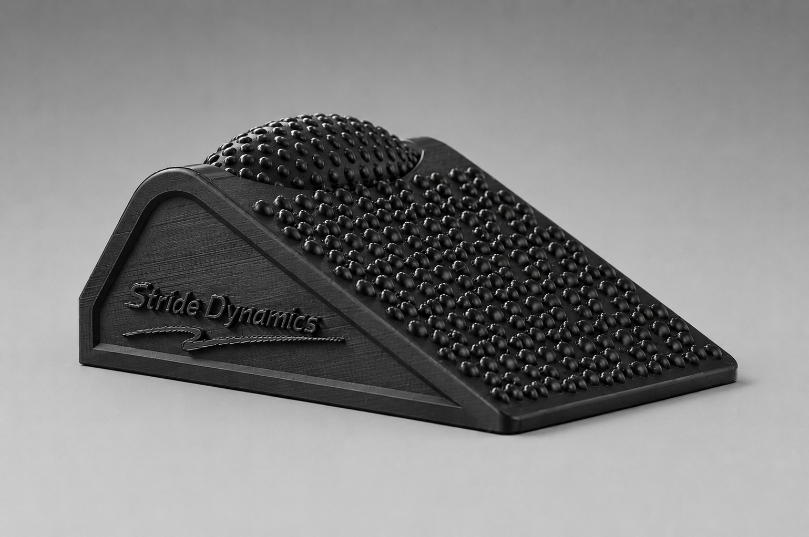

Dynamic Wedge
The Dynamic Wedge is the interactive foot, ankle, and calf training tool. It combines a textured sloped surface with a rolling barrel to support plantar fascia stretching, foot activation, ankle mobility, balance, stability, and lower-leg recovery work.
- Sloped surface for foot, plantar fascia, and calf stretching
- Rolling barrel for arch pressure and deeper foot mobility work
- Designed for runners, athletes, active adults, PTs, and trainers
